Yabu, Hyogo: things to do, food and stays
Yabu · Hyogo
Yabu
Highlighted on the Hyogo map.
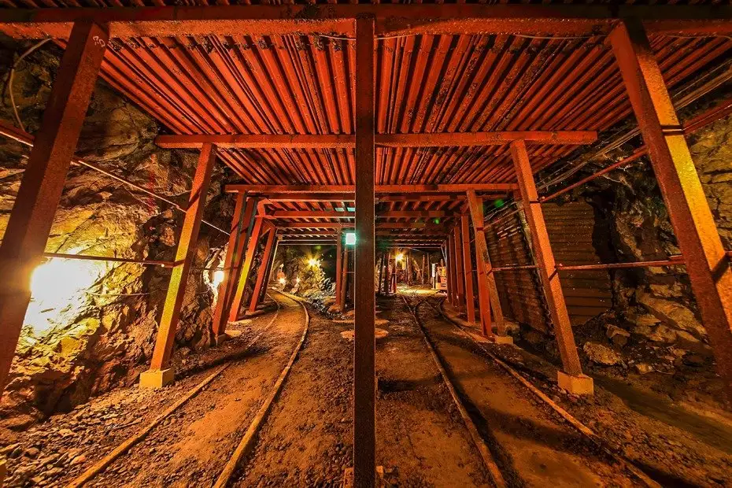
Stay
フェアフィールド･バイ･マリオット･兵庫但馬やぶ
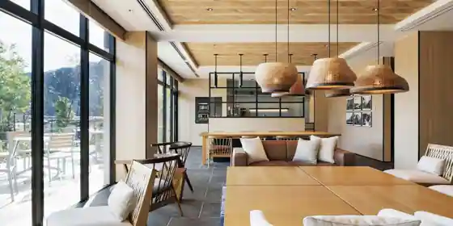
Feafirudo Feafirudo Bai Bai Mariotto Mariotto Hyogo Tajima Yabu
Hotel IKUE養父
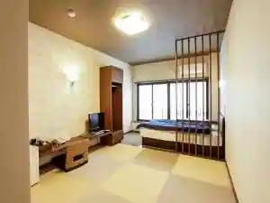
Hotel IKUE Yofu
Inn in Yoka, Yabu with parking and family-friendly stays.
但馬長寿の郷宿泊棟「夢」ロッジ
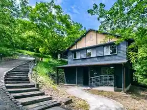
Tajima Choju No Goyado Haku To (Yume) Lodge
Mountain lodge in Yoka, Yabu with groups.
ピュアホテル
Pyua Hotel
フェアフィールド・バイ・マリオット・兵庫但馬やぶ
Feafirudo Bai Mariotto Hyogo Tajima Yabu
やぶ温泉 但馬楽座
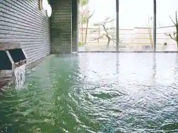
Yabu Onsen Tajima Rakuza
Inn at Yabu Onsen in Ueno, Yabu.
旅館 古城
Ryokan Kojo
Ryokan inn in Ueno, Yabu with business travelers.
ビジネスホテルＡＤＡＣＨＩ
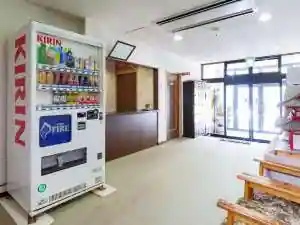
Business Hotel ADACHI
Hotel in Ueno, Yabu with family-friendly stays and business travelers.
ほたるの館
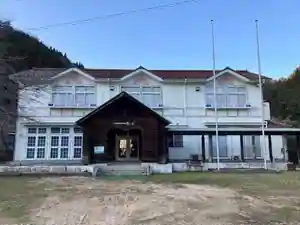
Hotaruno Kan
Inn in Okukomechi, Yabu with groups.
あゆ公園 古民家風コテージ
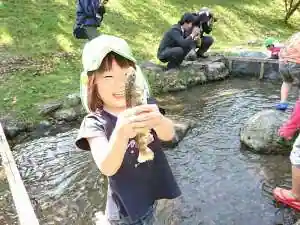
Ayu Koen Ko Minka Kaze Cottage
Cottages in Oya, Yabu with a renovated traditional house.
東鉢伏高原 清和荘
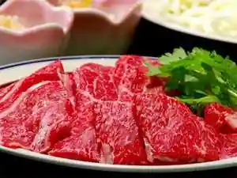
Higashi Hachibuse Kogen Kiyokazu So
Inn in Betsumiya, Yabu with a quiet countryside setting.
ニュー桂屋
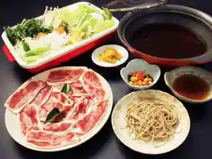
Nyu Katsura Ya
Inn in Betsumiya, Yabu with pet-friendly rooms.
Dining
レストランブーケ
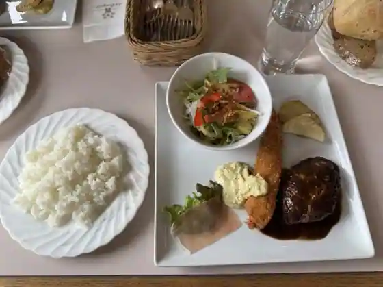
Restaurant Buke
れすとらん やの
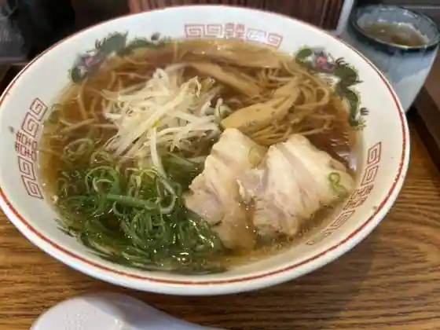
Restaurant Yano
道の駅 ようか但馬蔵
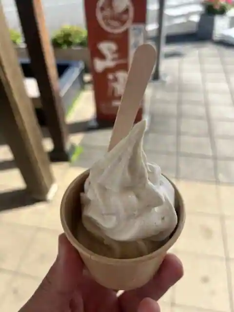
Michi No Eki Yoka Tajima Kura
道の駅 但馬楽座 やぶ牧場
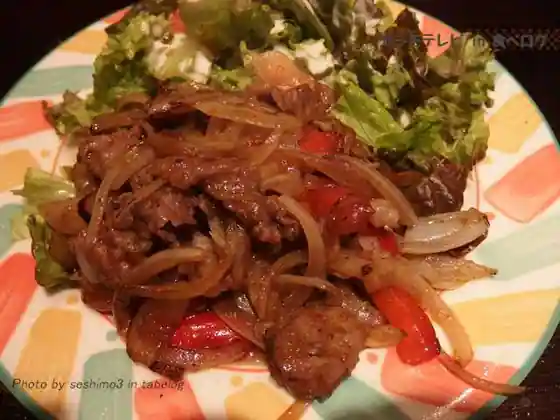
Michi No Eki Tajima Rakuza Yabu Bokujo
出石そば 仙石 養父店
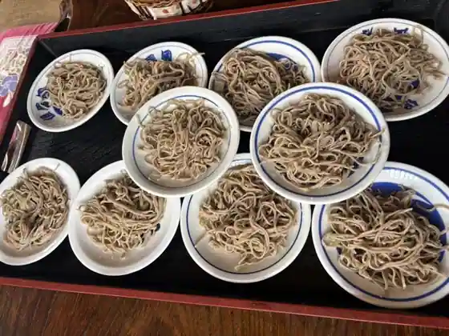
Izushi Soba Sengoku Yofu
ラ・リビエール
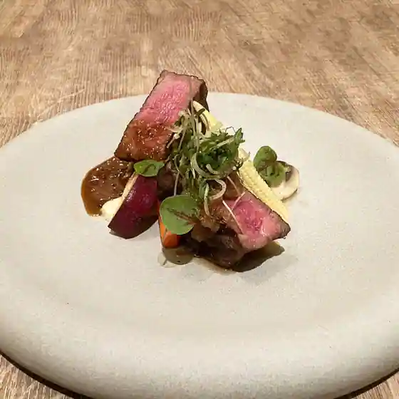
Ra Ribieru
かぐや姫
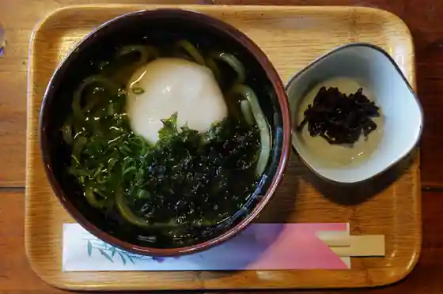
Kaguya Hime
いこい食堂
Ikoi Shokudo
中華料理 香蘭
Chukaryori Koran
とんちんかん はさまじ本店
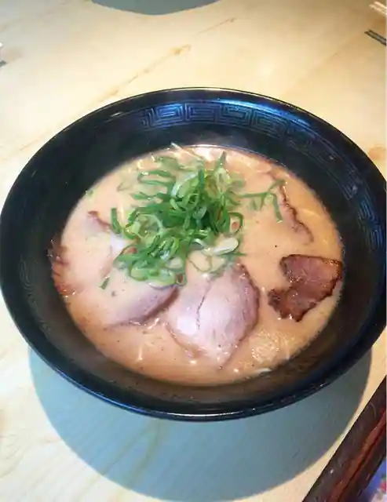
Tonchinkan Hasamaji Hon
谷常 本店
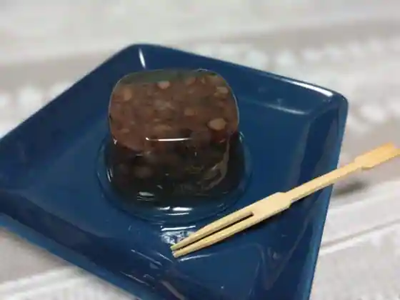
Tani Tsune Hon
ピークス カフェ
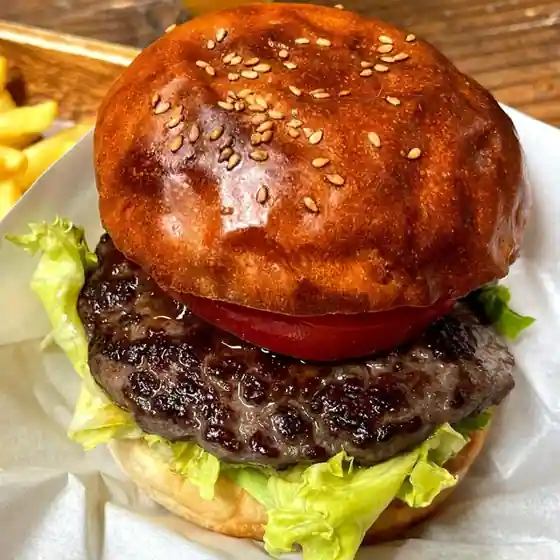
Pikusu Cafe
肉と野菜と魚の料理 たけうち
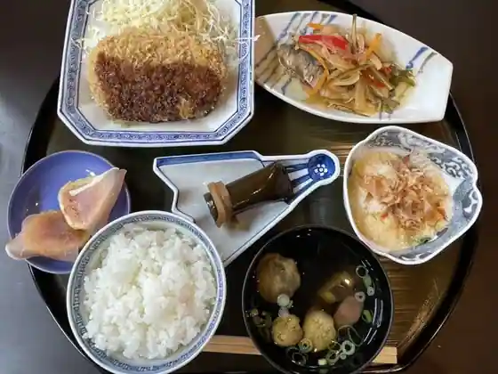
Niku To Yasai To Sakana No Ryori Takeuchi
ポート
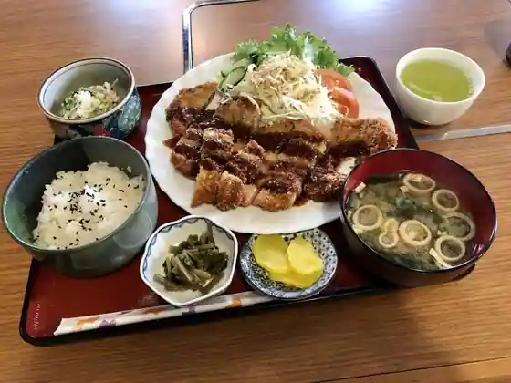
Poto
やまとよ
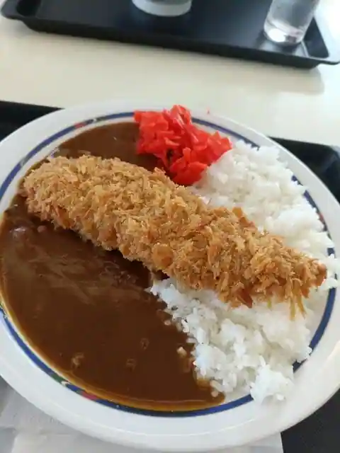
Yamatoyo
天下無敵
Tenkamuteki
旅路食堂
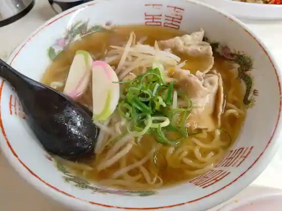
Tabiji Shokudo
幸鮨
Sachi Sushi
カタシマ 本店
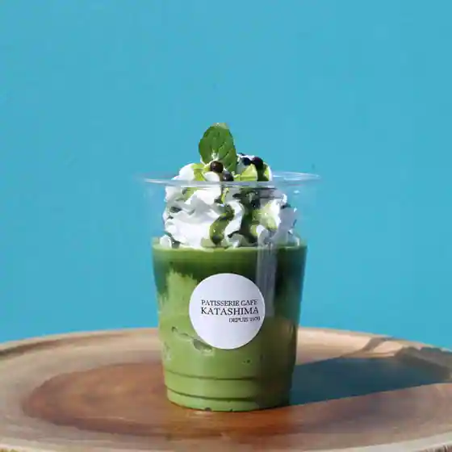
Katashima Hon
山のレストラン C's
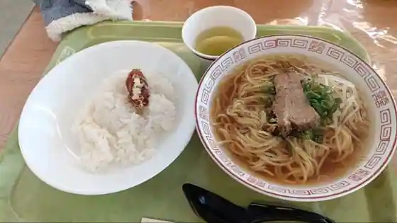
Yama No Restaurant C's
道の駅 但馬楽座
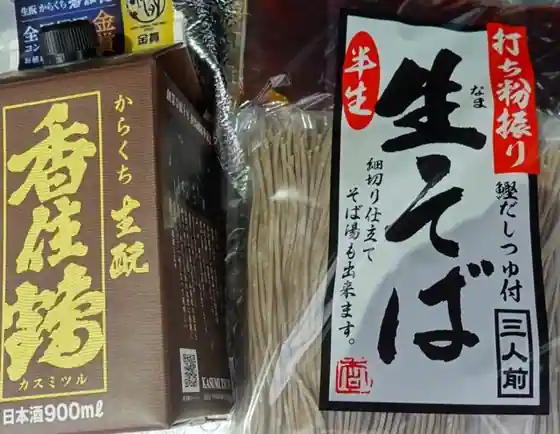
Michi No Eki Tajima Rakuza
Cafe de Manma
Cafe de Manma
le fleuve
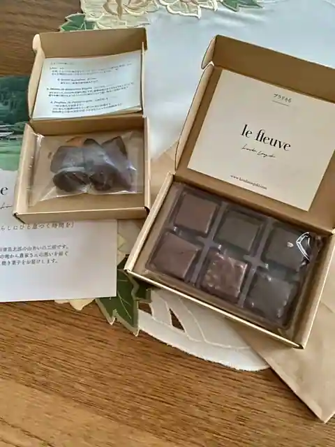
le fleuve
Sights
Akenobe Mine
Former tin and copper mine site interpreting Yabu’s mountain industrial heritage